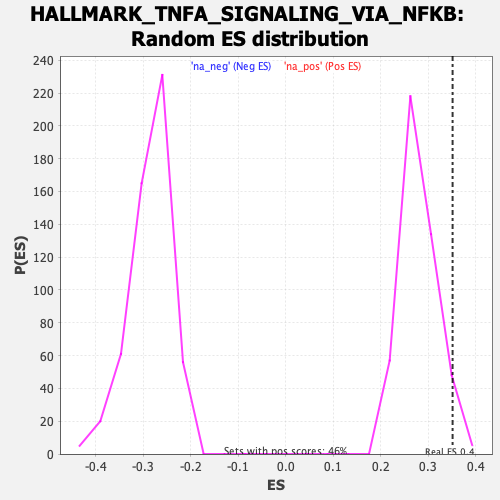

| | | Dataset | DE_genes |
| Phenotype | NoPhenotypeAvailable |
| Upregulated in class | na_pos |
| GeneSet | HALLMARK_TNFA_SIGNALING_VIA_NFKB |
| Enrichment Score (ES) | 0.35136375 |
| Normalized Enrichment Score (NES) | 1.2513062 |
| Nominal p-value | 0.04761905 |
| FDR q-value | 0.17314292 |
| FWER p-Value | 0.846 |
Table: GSEA Results Summary
 Fig 1: Enrichment plot: HALLMARK_TNFA_SIGNALING_VIA_NFKB
Fig 1: Enrichment plot: HALLMARK_TNFA_SIGNALING_VIA_NFKB
Profile of the Running ES Score & Positions of GeneSet Members on the Rank Ordered List
| SYMBOL | RANK IN GENE LIST | RANK METRIC SCORE | RUNNING ES | CORE ENRICHMENT | | 1 | SGK1 | 8 | 46.375 | 0.0531 | Yes |
| 2 | PTGER4 | 9 | 45.596 | 0.1058 | Yes |
| 3 | NR4A2 | 150 | 20.181 | 0.1218 | Yes |
| 4 | TLR2 | 173 | 19.395 | 0.1431 | Yes |
| 5 | TNFAIP3 | 211 | 18.066 | 0.1620 | Yes |
| 6 | SQSTM1 | 268 | 16.707 | 0.1784 | Yes |
| 7 | YRDC | 290 | 16.129 | 0.1959 | Yes |
| 8 | SIK1 | 346 | 15.028 | 0.2104 | Yes |
| 9 | HES1 | 377 | 14.584 | 0.2257 | Yes |
| 10 | TUBB2A | 485 | 13.066 | 0.2352 | Yes |
| 11 | F3 | 616 | 11.970 | 0.2423 | Yes |
| 12 | B4GALT1 | 647 | 11.731 | 0.2543 | Yes |
| 13 | CCL20 | 650 | 11.710 | 0.2677 | Yes |
| 14 | NR4A3 | 659 | 11.619 | 0.2807 | Yes |
| 15 | ACKR3 | 673 | 11.472 | 0.2933 | Yes |
| 16 | FUT4 | 736 | 10.996 | 0.3028 | Yes |
| 17 | RCAN1 | 1107 | 8.928 | 0.2939 | Yes |
| 18 | DDX58 | 1154 | 8.728 | 0.3015 | Yes |
| 19 | IER5 | 1219 | 8.425 | 0.3080 | Yes |
| 20 | NR4A1 | 1234 | 8.347 | 0.3169 | Yes |
| 21 | MYC | 1378 | 7.849 | 0.3185 | Yes |
| 22 | RELB | 1406 | 7.764 | 0.3261 | Yes |
| 23 | ABCA1 | 1462 | 7.582 | 0.3320 | Yes |
| 24 | TGIF1 | 1503 | 7.442 | 0.3385 | Yes |
| 25 | GCH1 | 1567 | 7.208 | 0.3435 | Yes |
| 26 | CXCL2 | 1577 | 7.191 | 0.3514 | Yes |
| 27 | ETS2 | 1786 | 6.597 | 0.3482 | No |
| 28 | DUSP2 | 1898 | 6.315 | 0.3497 | No |
| 29 | JUN | 2055 | 5.971 | 0.3485 | No |
| 30 | NFE2L2 | 2269 | 5.503 | 0.3438 | No |
| 31 | NFKBIE | 2365 | 5.321 | 0.3450 | No |
| 32 | ATF3 | 2499 | 5.075 | 0.3440 | No |
| 33 | CXCL3 | 2707 | 4.686 | 0.3386 | No |
| 34 | PTGS2 | 2888 | 4.378 | 0.3343 | No |
| 35 | IFIH1 | 2955 | 4.279 | 0.3358 | No |
| 36 | EGR3 | 3039 | 4.156 | 0.3363 | No |
| 37 | SOD2 | 3409 | 3.635 | 0.3214 | No |
| 38 | RIPK2 | 3531 | 3.492 | 0.3191 | No |
| 39 | GFPT2 | 3620 | 3.382 | 0.3184 | No |
| 40 | CD83 | 3664 | 3.329 | 0.3200 | No |
| 41 | PLK2 | 3797 | 3.177 | 0.3169 | No |
| 42 | SPHK1 | 3831 | 3.133 | 0.3188 | No |
| 43 | MARCKS | 3986 | 2.956 | 0.3142 | No |
| 44 | NINJ1 | 4209 | 2.683 | 0.3057 | No |
| 45 | NFKB1 | 4239 | 2.659 | 0.3073 | No |
| 46 | CXCL1 | 4387 | 2.501 | 0.3026 | No |
| 47 | TNIP2 | 4436 | 2.447 | 0.3029 | No |
| 48 | NAMPT | 4440 | 2.444 | 0.3056 | No |
| 49 | BTG2 | 4482 | 2.406 | 0.3062 | No |
| 50 | BTG3 | 4513 | 2.375 | 0.3074 | No |
| 51 | KYNU | 4536 | 2.352 | 0.3090 | No |
| 52 | PANX1 | 4743 | 2.157 | 0.3008 | No |
| 53 | PDE4B | 5120 | 1.843 | 0.2834 | No |
| 54 | SPSB1 | 5197 | 1.782 | 0.2815 | No |
| 55 | FOSL1 | 5299 | 1.696 | 0.2782 | No |
| 56 | TNF | 5421 | 1.601 | 0.2738 | No |
| 57 | ATP2B1 | 5471 | 1.563 | 0.2730 | No |
| 58 | NFIL3 | 5555 | 1.501 | 0.2704 | No |
| 59 | NFKBIA | 5569 | 1.490 | 0.2715 | No |
| 60 | PLPP3 | 5648 | 1.442 | 0.2691 | No |
| 61 | GEM | 5700 | 1.407 | 0.2681 | No |
| 62 | CEBPD | 5735 | 1.389 | 0.2679 | No |
| 63 | DUSP4 | 5830 | 1.336 | 0.2646 | No |
| 64 | BIRC3 | 5880 | 1.307 | 0.2635 | No |
| 65 | TNFRSF9 | 6118 | 1.161 | 0.2526 | No |
| 66 | DNAJB4 | 6571 | 0.902 | 0.2301 | No |
| 67 | TAP1 | 6710 | 0.828 | 0.2239 | No |
| 68 | CCRL2 | 6803 | 0.782 | 0.2200 | No |
| 69 | ICOSLG | 7123 | 0.637 | 0.2042 | No |
| 70 | FOSL2 | 7229 | 0.589 | 0.1994 | No |
| 71 | SLC16A6 | 7295 | 0.566 | 0.1967 | No |
| 72 | NFKB2 | 7379 | 0.533 | 0.1930 | No |
| 73 | FJX1 | 7519 | 0.476 | 0.1863 | No |
| 74 | CFLAR | 7778 | 0.385 | 0.1734 | No |
| 75 | CCN1 | 7781 | 0.384 | 0.1737 | No |
| 76 | DRAM1 | 7908 | 0.345 | 0.1676 | No |
| 77 | KLF4 | 8017 | 0.308 | 0.1623 | No |
| 78 | ZC3H12A | 8183 | 0.265 | 0.1541 | No |
| 79 | DUSP1 | 8192 | 0.262 | 0.1540 | No |
| 80 | PHLDA1 | 8302 | 0.230 | 0.1486 | No |
| 81 | CSF1 | 8304 | 0.230 | 0.1488 | No |
| 82 | MAP2K3 | 8310 | 0.228 | 0.1488 | No |
| 83 | IL23A | 8351 | 0.214 | 0.1470 | No |
| 84 | EGR2 | 8405 | 0.200 | 0.1444 | No |
| 85 | TIPARP | 8457 | 0.189 | 0.1420 | No |
| 86 | G0S2 | 8680 | 0.138 | 0.1306 | No |
| 87 | GADD45A | 9150 | 0.036 | 0.1063 | No |
| 88 | IL1B | 9285 | 0.013 | 0.0994 | No |
| 89 | ICAM1 | 9326 | 0.004 | 0.0973 | No |
| 90 | PDLIM5 | 9341 | 0.001 | 0.0966 | No |
| 91 | KLF2 | 9343 | 0.000 | 0.0965 | No |
| 92 | CDKN1A | 9347 | -0.000 | 0.0964 | No |
| 93 | EDN1 | 9423 | -0.014 | 0.0925 | No |
| 94 | SLC2A6 | 9442 | -0.016 | 0.0916 | No |
| 95 | SERPINE1 | 9529 | -0.031 | 0.0871 | No |
| 96 | CXCL6 | 9718 | -0.063 | 0.0774 | No |
| 97 | F2RL1 | 9774 | -0.072 | 0.0747 | No |
| 98 | BCL3 | 9984 | -0.124 | 0.0640 | No |
| 99 | CCND1 | 10017 | -0.129 | 0.0624 | No |
| 100 | PLAU | 10112 | -0.156 | 0.0577 | No |
| 101 | B4GALT5 | 10130 | -0.159 | 0.0570 | No |
| 102 | JAG1 | 10170 | -0.169 | 0.0552 | No |
| 103 | RHOB | 10578 | -0.268 | 0.0344 | No |
| 104 | CEBPB | 10771 | -0.319 | 0.0248 | No |
| 105 | CD69 | 11080 | -0.407 | 0.0093 | No |
| 106 | TNFAIP8 | 11127 | -0.427 | 0.0074 | No |
| 107 | GPR183 | 11148 | -0.431 | 0.0068 | No |
| 108 | MCL1 | 11200 | -0.444 | 0.0047 | No |
| 109 | IER2 | 11423 | -0.514 | -0.0063 | No |
| 110 | IRF1 | 11875 | -0.656 | -0.0289 | No |
| 111 | KLF9 | 11914 | -0.666 | -0.0301 | No |
| 112 | SAT1 | 11927 | -0.669 | -0.0300 | No |
| 113 | REL | 11985 | -0.687 | -0.0321 | No |
| 114 | KLF6 | 12084 | -0.724 | -0.0364 | No |
| 115 | EGR1 | 12279 | -0.796 | -0.0456 | No |
| 116 | CCL5 | 12336 | -0.820 | -0.0475 | No |
| 117 | BCL2A1 | 12347 | -0.825 | -0.0471 | No |
| 118 | FOSB | 12452 | -0.879 | -0.0515 | No |
| 119 | IL7R | 12471 | -0.885 | -0.0514 | No |
| 120 | IER3 | 12513 | -0.901 | -0.0525 | No |
| 121 | SLC2A3 | 12540 | -0.910 | -0.0528 | No |
| 122 | TANK | 12662 | -0.961 | -0.0579 | No |
| 123 | IRS2 | 12670 | -0.963 | -0.0572 | No |
| 124 | KDM6B | 12694 | -0.972 | -0.0573 | No |
| 125 | PLEK | 12956 | -1.083 | -0.0696 | No |
| 126 | PER1 | 13009 | -1.104 | -0.0710 | No |
| 127 | EHD1 | 13155 | -1.168 | -0.0772 | No |
| 128 | TNFAIP2 | 13330 | -1.258 | -0.0848 | No |
| 129 | AREG | 13786 | -1.522 | -0.1066 | No |
| 130 | CCNL1 | 13792 | -1.527 | -0.1051 | No |
| 131 | BMP2 | 13800 | -1.536 | -0.1037 | No |
| 132 | ZFP36 | 13831 | -1.555 | -0.1035 | No |
| 133 | EIF1 | 13835 | -1.559 | -0.1018 | No |
| 134 | PPP1R15A | 13982 | -1.662 | -0.1075 | No |
| 135 | NFAT5 | 14006 | -1.677 | -0.1068 | No |
| 136 | FOS | 14214 | -1.830 | -0.1154 | No |
| 137 | ZBTB10 | 14259 | -1.857 | -0.1155 | No |
| 138 | RELA | 14315 | -1.895 | -0.1162 | No |
| 139 | HBEGF | 14387 | -1.953 | -0.1176 | No |
| 140 | SNN | 14560 | -2.080 | -0.1242 | No |
| 141 | BTG1 | 14582 | -2.098 | -0.1228 | No |
| 142 | VEGFA | 14799 | -2.273 | -0.1314 | No |
| 143 | SDC4 | 14884 | -2.348 | -0.1331 | No |
| 144 | IL6ST | 14925 | -2.386 | -0.1324 | No |
| 145 | IL1A | 15039 | -2.478 | -0.1354 | No |
| 146 | LIF | 15097 | -2.523 | -0.1355 | No |
| 147 | PHLDA2 | 15150 | -2.571 | -0.1352 | No |
| 148 | TSC22D1 | 15157 | -2.578 | -0.1325 | No |
| 149 | STAT5A | 15269 | -2.700 | -0.1352 | No |
| 150 | TNIP1 | 15459 | -2.888 | -0.1417 | No |
| 151 | TNFSF9 | 15632 | -3.098 | -0.1470 | No |
| 152 | RNF19B | 15913 | -3.417 | -0.1576 | No |
| 153 | SERPINB8 | 16132 | -3.717 | -0.1646 | No |
| 154 | TRIB1 | 16578 | -4.370 | -0.1827 | No |
| 155 | TRIP10 | 16631 | -4.449 | -0.1803 | No |
| 156 | KLF10 | 16671 | -4.511 | -0.1771 | No |
| 157 | CLCF1 | 16763 | -4.645 | -0.1765 | No |
| 158 | CD44 | 16795 | -4.706 | -0.1726 | No |
| 159 | DENND5A | 17057 | -5.196 | -0.1802 | No |
| 160 | GADD45B | 17075 | -5.223 | -0.1750 | No |
| 161 | LITAF | 17082 | -5.241 | -0.1693 | No |
| 162 | TRAF1 | 17134 | -5.328 | -0.1658 | No |
| 163 | DUSP5 | 17271 | -5.662 | -0.1663 | No |
| 164 | BIRC2 | 17325 | -5.777 | -0.1624 | No |
| 165 | MXD1 | 17404 | -5.953 | -0.1596 | No |
| 166 | BHLHE40 | 17465 | -6.090 | -0.1557 | No |
| 167 | LAMB3 | 17617 | -6.453 | -0.1561 | No |
| 168 | IFIT2 | 17619 | -6.455 | -0.1487 | No |
| 169 | IL18 | 17656 | -6.554 | -0.1430 | No |
| 170 | MAFF | 17712 | -6.708 | -0.1381 | No |
| 171 | PNRC1 | 17730 | -6.759 | -0.1311 | No |
| 172 | MAP3K8 | 17972 | -7.555 | -0.1349 | No |
| 173 | BCL6 | 17980 | -7.602 | -0.1265 | No |
| 174 | PLAUR | 18237 | -8.620 | -0.1299 | No |
| 175 | JUNB | 18265 | -8.790 | -0.1211 | No |
| 176 | PTPRE | 18555 | -10.184 | -0.1244 | No |
| 177 | EFNA1 | 18647 | -10.844 | -0.1166 | No |
| 178 | SOCS3 | 18694 | -11.128 | -0.1061 | No |
| 179 | PMEPA1 | 18741 | -11.507 | -0.0952 | No |
| 180 | IFNGR2 | 18812 | -12.173 | -0.0848 | No |
| 181 | SMAD3 | 18905 | -13.222 | -0.0743 | No |
| 182 | PFKFB3 | 19034 | -14.850 | -0.0638 | No |
| 183 | IL15RA | 19160 | -17.518 | -0.0501 | No |
| 184 | ID2 | 19294 | -22.108 | -0.0314 | No |
| 185 | LDLR | 19410 | -33.659 | 0.0015 | No |
Table: GSEA details [plain text format]

Fig 2: HALLMARK_TNFA_SIGNALING_VIA_NFKB: Random ES distribution
Gene set null distribution of ES for HALLMARK_TNFA_SIGNALING_VIA_NFKB